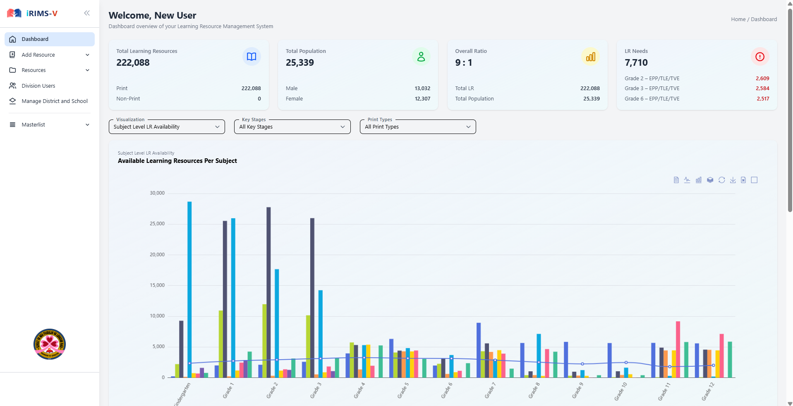

iRIMS-V
Learning resources across a region lived in a spreadsheet per office, so no one could see totals or shortages. iRIMS-V tracks every print and non-print resource from region to division, district, and school, and reports coverage against enrolment.
- Client
- DepEd Region V
- Role
- Designed, built, deployed, maintain
- Stack
- Laravel 12, PostgreSQL, Blade, htmx, Docker
- Result
- Number needed · offices or records